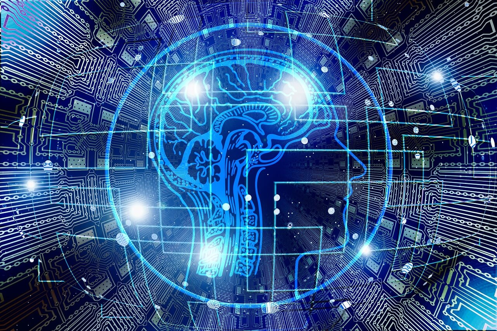

Main page
Applications of AI.
Importance of AI
Future of AI
Types of AI..
Type 1: Reactive machines
Such devices can be sensitive to circumstances. A prominent example could be the IBM chess program Deep Blue. Most notable, the chess program won against Garry Kasparov, the famous chess legend. In fact, memory is missing on these computers.
Type 2: Limited memory
Such AI systems can take advantage of past experiences to warn future ones. A good example of this could be self-driving cars. These vehicles have mechanisms for making decisions. The vehicle is conducting acts like lane changes. These actions come most notable from observations. Those observations are not permanently stored.
Type 3: Theory of mind
It applies to allowing people to understand. It implies, above all, recognizing that others have their own values, thoughts, desires and opinions. This form of AI, however, does not yet exist.
Type 4: Self-awareness
This is Artificial Intelligence 's highest, and most sophisticated level. These systems have a sense of self. I have even perception, perception, and emotions. Of course there is no such form of technology yet. The technology will be a revolution for sure.
